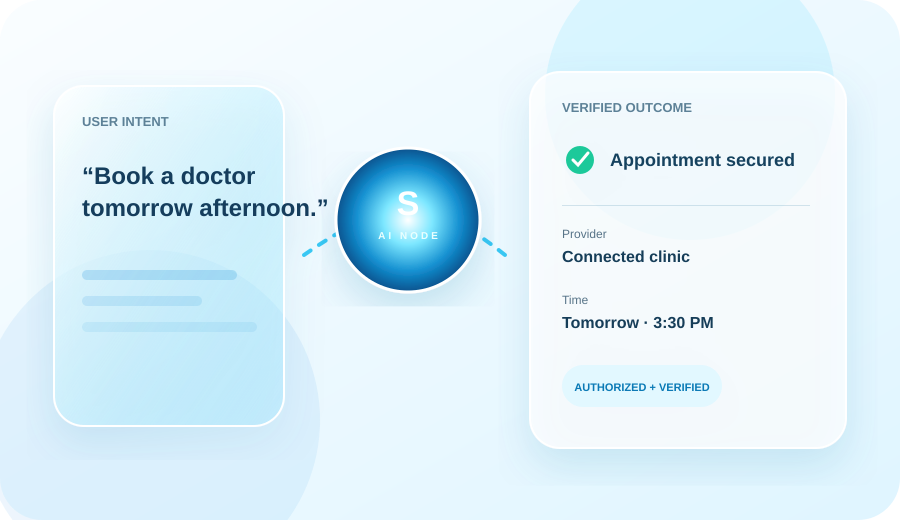
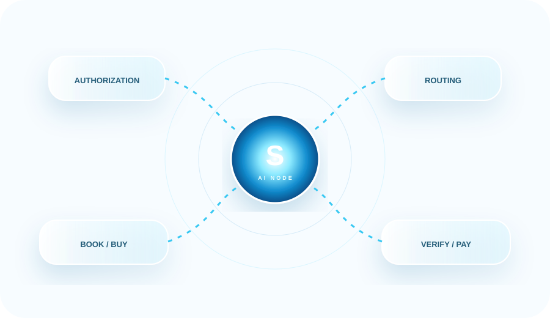
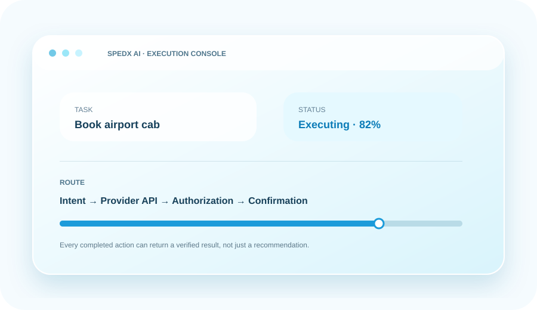
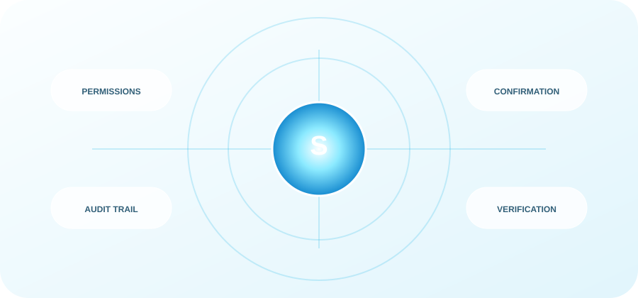

01
Today
Search → compare → open apps → enter details → book → pay → track.
Intent×Apps×Steps×Action
SPEDX AI is building a conversational execution layer for everyday services — connecting user intent to authorized apps, APIs and service providers so people can move from “I need this” to “it’s done.”
Today, completing one simple need can require multiple apps, logins, searches, comparisons, forms and payments. SPEDX AI is designed around the opposite experience: express the outcome once, then let an AI execution layer orchestrate the work.
Search → compare → open apps → enter details → book → pay → track.
One conversation becomes an orchestration layer across services, with permissions and confirmation at the right moments.
The intelligence and orchestration layer at the center of SPEDX AI.
Convert natural language into a structured goal, required information and constraints.
Identify the relevant integration, API, merchant or service pathway.
Use explicit user permissions, secure credentials and confirmation gates for sensitive actions.
Perform the action, verify the result and return a clear outcome to the user.
The interface is designed to keep the user focused on the outcome while SPEDX AI coordinates the underlying steps.

3 relevant slots · location and availability matched
SPEDX AI can become the front door to categories people already use every day.
Doctors, clinics, diagnostics and pharmacy workflows.
Orders, reservations, shopping and repeat purchases.
Cabs, hotels, travel planning and reservations.
Everyday services coordinated through connected providers.
Discovery, applications, scheduling and service workflows.
Long-term opportunity for guided, authorized digital workflows.

AI Node routes intent, authorization and execution across connected providers while keeping trust controls visible.
The model is designed to expand as more categories and integrations are connected.
As successful actions grow, SPEDX AI can participate across transactions, subscriptions, partner integrations and enterprise workflows.

Commission or platform economics on eligible completed actions.
Premium plans for higher limits, advanced workflows and power-user capabilities.
Commercial integrations and partner-driven distribution opportunities.
Action infrastructure and workflow capabilities for businesses and institutions.
A staged plan that prioritizes product reliability, integrations and real-world validation.
Core conversational interface, AI Node, authentication, permissions, orchestration architecture and initial action flows.
Current · prototypeLaunch selected high-frequency categories, onboard integration partners and measure successful task completion.
NextMore APIs, merchants, service providers, payments and deeper agentic workflows.
ScaleExpand into B2B / enterprise use cases and make SPEDX AI an execution layer other products can build on.
Long-termA compact view of what is known today, what SPEDX AI is building, and what the next stage must prove.
Early product architecture and interface concepts are being developed.
One conversational layer intended to orchestrate authorized actions across services.
Planned capital to build, validate, integrate and scale the platform.
The next milestone is measurable real-world task completion, reliability and user trust.
SPEDX AI is seeking capital to move from prototype to a production-grade platform over a focused ~24-month build and validation period.
Start investor conversation ↗
The long-term advantage is not another chatbot. It is the combination of outcome-first UX, connected capabilities, execution feedback and a trust architecture built for real actions.
The interface is built around what the user wants completed, not which app they need to open.
As connected capabilities grow, the same conversational interface can serve more intents.
Verified task outcomes can create a valuable feedback loop for routing, reliability and personalization.
Permissions, confirmations, audit trails and result verification are designed into the product philosophy.
Building SPEDX AI from Kerala, India, with a long-term ambition to create a global technology company around AI-powered execution.
Part of the founding team, focused on leadership, strategy, problem-solving and building the company through an early-stage environment.
Direct answers designed for an idea-stage conversation — without inventing traction, revenue or customers.
SPEDX AI wants to become the conversational execution layer between human intent and the services people use every day.